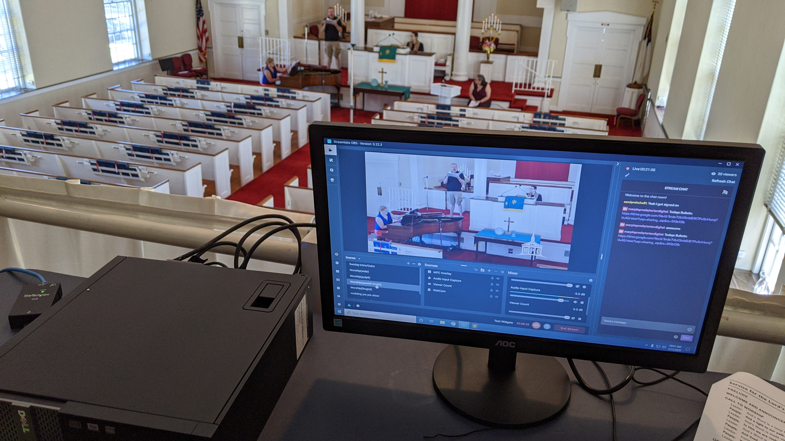
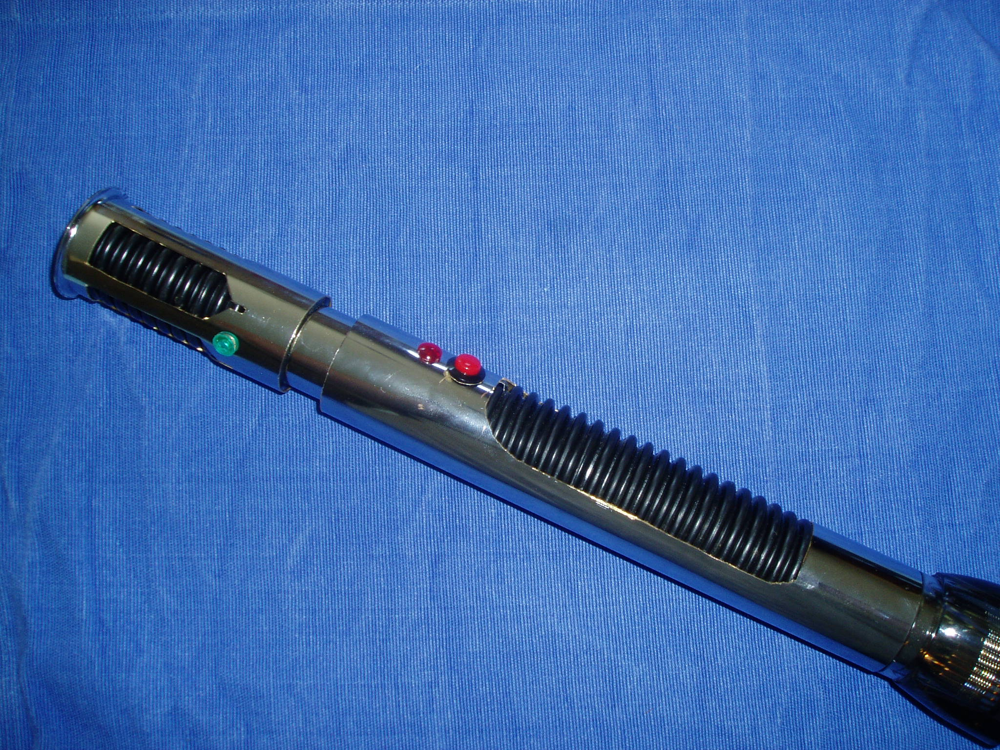
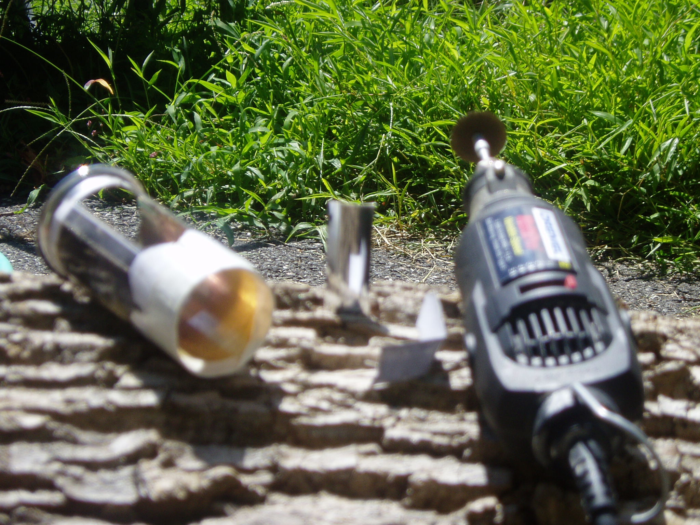
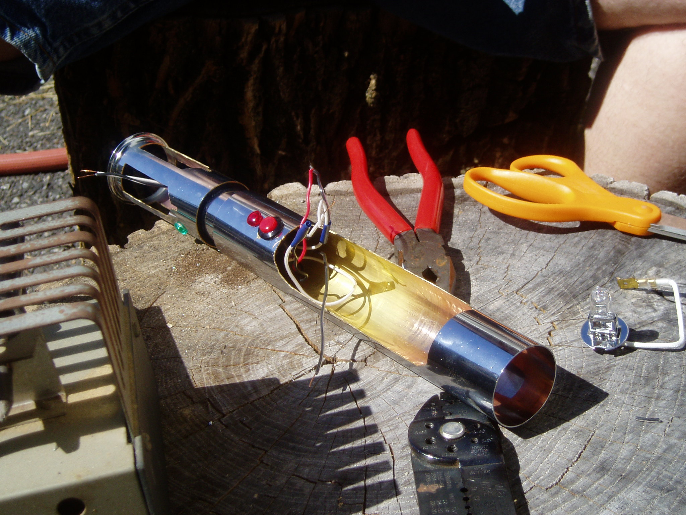
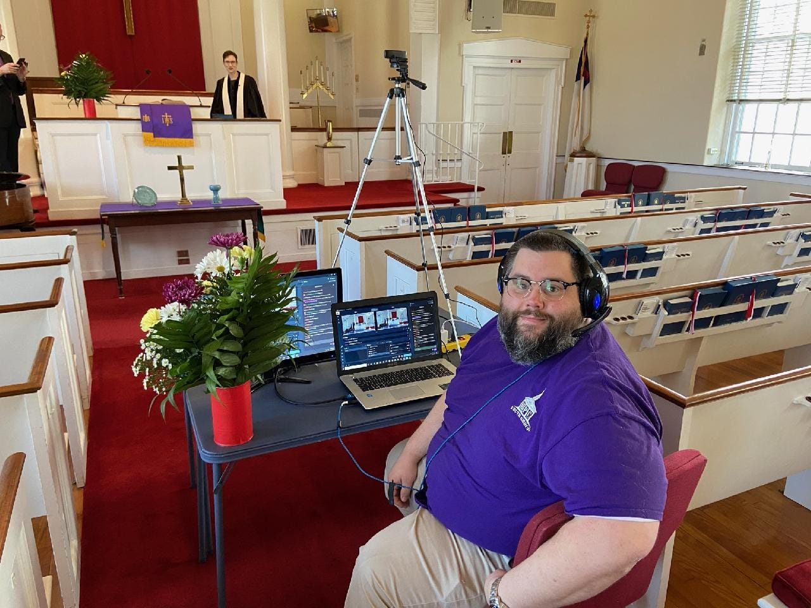
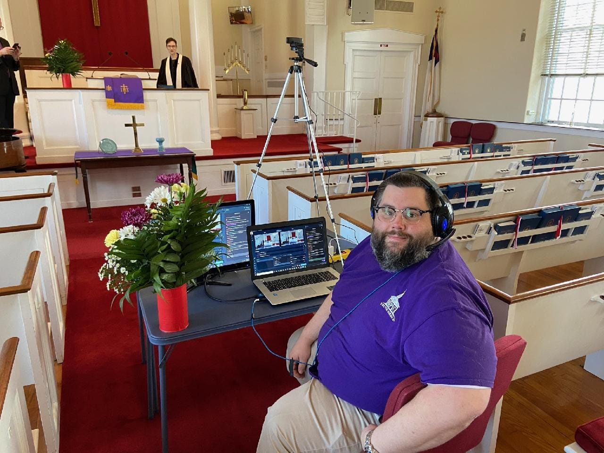
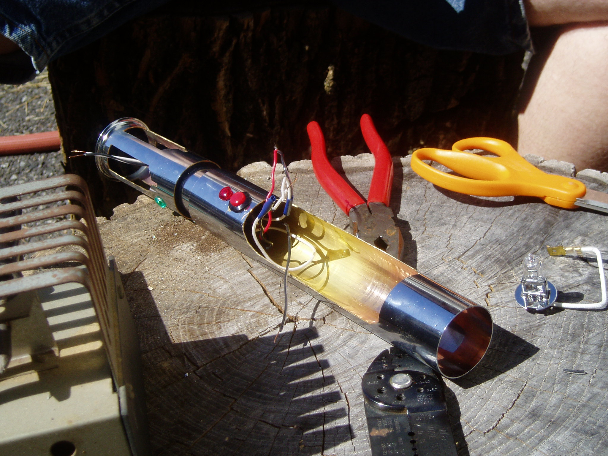
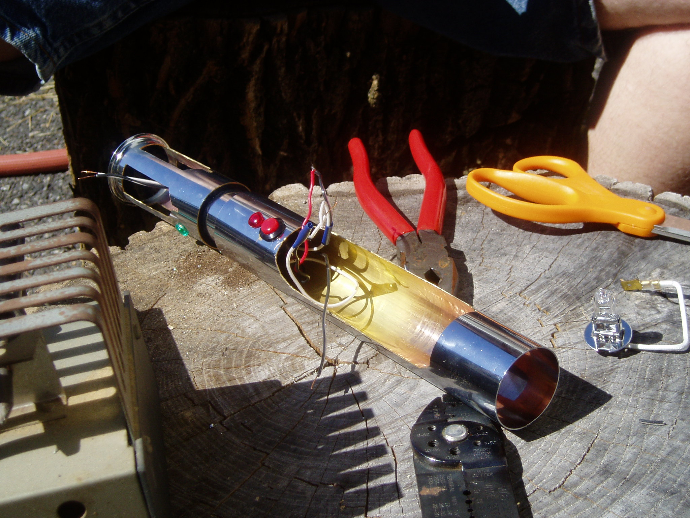

I bout a refurbished parrot 2 for a while back when they were on sale. Mnay months later I finally
got it out of the box and took it for a test flight. It was amazing, can't wait to try
this other places. Take a flight around the house with me as I shake down the parrot.
Gallery
MPC TWITCH STREAM
Mini TV Studio

I never wanted to be a twich streamer, but I also didn't expect the world to lock down for
months. Since people can't go to church, church needs to come to the people. so on short notice
I learned how to stream and began cobbling a
small setup together. Several iterations latter I think I build a great setup that will extend
the reach of the church.
When its all said and done Marple Pres has a minor tv studio on its hands now. We have a multicam
setup and more upgrades planned in the future. The ability ot stream has been handy in unexpected
situations like funerals, and weddings.
Many years ago now my cousin and I got together to celebrate a shared fandom of starwars buy
building some prop ready light sabers. Slip joint drain pipe from a hardware store, electronics
from radio shack, and a dremel rotary tool
combined for a certain kind of magic.
Gallery



Chess
The Game of Geniuses and Me Too
I love chess. I am far from the greatest player but I will play with anyone who wants a game. Find me
on chess.com or in person.


 



 
